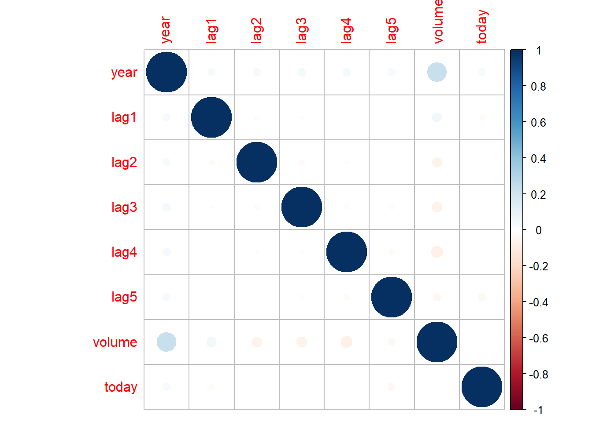
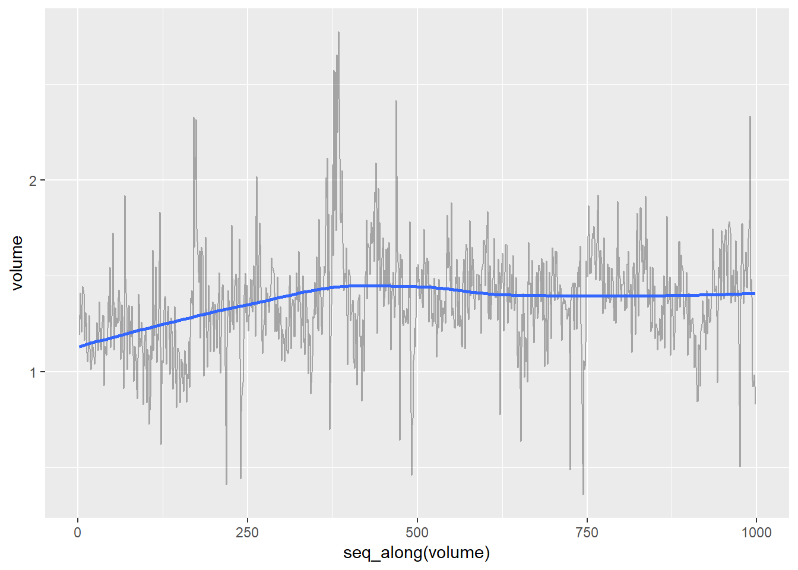
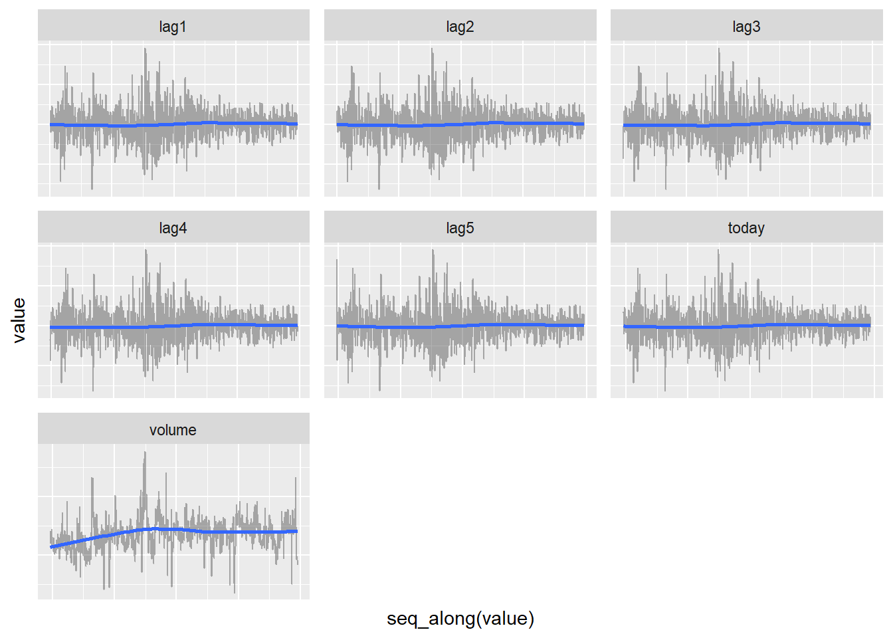

4 Lab: Logistic Regression, LDA, QDA, and KNN
This is a modified version of the Lab: Logistic Regression, LDA, QDA, and KNN section of chapter 4 from Introduction to Statistical Learning with Application in R. This version uses tidyverse techniques and methods that will allow for scalability and a more efficient data analytic pipeline.
We will need the packages listed below. Order matters! We strategically load tidyverse after MASS so that the package dplyr from the tidyverse is loaded second. We do this because both packages have a select() function, and R will attempt to use the most recently loaded version of a function. This is called masking and you’ll get these warnings when you load packages with such conflicts. We can use dplyr::select() or MASS::select() to force R to use the function version from their respective package. This is cumbersome, so by loading dplyr second we are able to avoid having to use dplyr:select().
# Load packages
library(MASS)
library(tidyverse)
library(modelr)
library(janitor)
library(skimr)
library(broom)
library(corrplot)
library(class)4.1 Data Setup
We have been discussing the concept and importance of training and testing data over the last few weeks. We will start to use it practice now by using what is sometimes called a hold-out dataset, which is really just a test dataset. Before we implement this process let’s introduce the data we will be using for this lab.
We will be using the Smarket dataset from the ISLR library. Take a moment and inspect the codebook — ?ISLR::Smarket. This data set consists of percentage returns for the S&P 500 stock index over 1,250 days, from the beginning of 2001 until the end of 2005. For each date, we have recorded the percentage returns for each of the five previous trading days, Lag1 through Lag5. We have also recorded Volume (the number of shares traded on the previous day, in billions), Today (the percentage return on the date in question) and Direction (whether the market was Up or Down on this date).
In order to continue practicing the implementation of a coding structure that allows us to both scale and easily modify our workflow we will load this data from the provided Smaket.csv file. Notice that we re-type all character variables as factors.
smarket_dat <- read_csv("data/Smarket.csv") %>%
clean_names() %>%
mutate_if(is_character, factor)We would typically proceed onto examining the data with numerical summaries and visualizations, but since we plan on creating a hold-out/test dataset we should do that first. We do not want aspects of the testing data to influence our modeling training/building process. There is a balancing act here because we first need to adequately process the data in order to ensure that both the training and testing datasets have the same data structure (e.g, variable types). Or we need to ensure that any data cleaning/processing pipeline we build for the training data can also be applied to the training data.
smarket_dat is fairly simple so we can proceed directly to splitting our data into testing and training. Since this is time dependent data we will use data pre-2005 (2001-2004) for training and the 2005 data for testing. We will store these in a tibble
data_db <- tibble(train = list(smarket_dat %>% filter(year < 2005)),
test = list(smarket_dat %>% setdiff(train)))Now let’s examine the training potion of our data.
data_db %>%
unnest(train) %>%
skim() %>%
kable()## Skim summary statistics
## n obs: 998
## n variables: 9
##
## Variable type: factor
##
## variable missing complete n n_unique top_counts ordered
## ----------- --------- ---------- ----- ---------- -------------------------- ---------
## direction 0 998 998 2 Up: 507, Dow: 491, NA: 0 FALSE
##
## Variable type: numeric
##
## variable missing complete n mean sd p0 p25 p50 p75 p100 hist
## ---------- --------- ---------- ----- --------- ------ ------- ------- ------- ------ ------ ----------
## lag1 0 998 998 0.00096 1.23 -4.92 -0.71 0.021 0.66 5.73 <U+2581><U+2581><U+2583><U+2587><U+2585><U+2581><U+2581><U+2581>
## lag2 0 998 998 0.00076 1.23 -4.92 -0.71 0.021 0.66 5.73 <U+2581><U+2581><U+2583><U+2587><U+2585><U+2581><U+2581><U+2581>
## lag3 0 998 998 -0.0019 1.23 -4.92 -0.71 0.021 0.66 5.73 <U+2581><U+2581><U+2583><U+2587><U+2585><U+2581><U+2581><U+2581>
## lag4 0 998 998 -0.0036 1.23 -4.92 -0.71 0.015 0.66 5.73 <U+2581><U+2581><U+2583><U+2587><U+2585><U+2581><U+2581><U+2581>
## lag5 0 998 998 0.0018 1.24 -4.92 -0.71 0.021 0.66 5.73 <U+2581><U+2581><U+2583><U+2587><U+2585><U+2581><U+2581><U+2581>
## today 0 998 998 0.00045 1.23 -4.92 -0.71 0.015 0.66 5.73 <U+2581><U+2581><U+2583><U+2587><U+2585><U+2581><U+2581><U+2581>
## volume 0 998 998 1.37 0.27 0.36 1.21 1.37 1.51 2.78 <U+2581><U+2581><U+2585><U+2587><U+2582><U+2581><U+2581><U+2581>
## year 0 998 998 2002.52 1.11 2001 2002 2003 2004 2004 <U+2587><U+2581><U+2587><U+2581><U+2581><U+2587><U+2581><U+2587># Proportions of Up/Down days
data_db %>%
unnest(train) %>%
count(direction) %>%
mutate(prop = n/sum(n))## # A tibble: 2 x 3
## direction n prop
## <fct> <int> <dbl>
## 1 Down 491 0.492
## 2 Up 507 0.508# Correlations
data_db %>%
unnest(train) %>%
select(-direction) %>%
cor() %>%
corrplot()
# Time trend in volume
data_db %>%
unnest(train) %>%
ggplot(aes(x = seq_along(volume), y = volume)) +
geom_line(alpha = 0.3) +
geom_smooth(se = FALSE)## `geom_smooth()` using method = 'loess' and formula 'y ~ x'
# Checking time trend for other variables
data_db %>%
unnest(train) %>%
gather(key = variable, value = value, -year, -direction) %>%
ggplot(aes(x = seq_along(value), y = value)) +
geom_line(alpha = 0.3) +
geom_smooth(se = FALSE) +
theme(axis.text = element_blank(),
axis.ticks = element_blank()) +
facet_wrap(. ~ variable, scales = "free")FALSE `geom_smooth()` using method = 'loess' and formula 'y ~ x'
4.2 Logistic Regression
We will be using fit a few logistic regressions to attempt to predict whether the stock market will go down or up. Our set of possible predictors are the five lag measurements (lag1, …, lag5) and volume of volume of shares (in billions) traded on the previous day. We will train the models on the training dataset and then use the testing data set to validate and compare the models.
We will begin by only fitting a logistic model that uses all available predictors, but set up our workflow to allow us to easily include alternatively specified logistic models.
Let’s fit the model.
glm_fits <- data_db %>%
mutate(mod_01 = map(train, glm,
formula = direction ~ lag1 + lag2 + lag3 + lag4 + lag5 + volume,
family = binomial))Just like with linear models we can use tidy(), confint_tidy(), glance(), augment() and predict() to inspect the model. While we could store this information in glm_fits we will hold off on this for now because we first need to understand what we will be storing and why we want it stored. Secondly it would throw a wrench into our general workflow for fitting several models (look back on how we fit several linear models).
Let’s inspect the parameter estimates.
glm_fits %>%
pluck("mod_01", 1) %>%
tidy()## # A tibble: 7 x 5
## term estimate std.error statistic p.value
## <chr> <dbl> <dbl> <dbl> <dbl>
## 1 (Intercept) 0.191 0.334 0.573 0.567
## 2 lag1 -0.0542 0.0518 -1.05 0.295
## 3 lag2 -0.0458 0.0518 -0.884 0.377
## 4 lag3 0.00720 0.0516 0.139 0.889
## 5 lag4 0.00644 0.0517 0.125 0.901
## 6 lag5 -0.00422 0.0511 -0.0826 0.934
## 7 volume -0.116 0.240 -0.485 0.628Nothing, not even the intercept, is significant in this model. Indicating that there is no statistical evidence of an association between any of these predictors and direction. While none of the associations were significant, we are probably more interested in how well the model predicted direction. We can extract the predicted values using augment(), the .fitted values, or predict(). However augment() includes additional measures for model diagnostics (e.g. .hat, .cooksd, etc.) which can be useful. We will opt to use predict() for now since we want to focus on assessing the predictive capabilities of our model. We can and should circle back to model diagnostics for a more comprehensive understanding of our fitted model.
It is extremely important to understand what predict() returns for a logistic regression. Recall that we ultimately want a predicted direction (Up or Down). First note that without a newdata argument predict() returns a model’s predicted values for the data it was fitted/trained on. Next, let’s apply and actually inspect the values that predict() returns
glm_fits %>%
pluck("mod_01", 1) %>%
predict() %>%
skim()##
## Skim summary statistics
##
## -- Variable type:numeric ---------------------------------------------------------------------------
## variable missing complete n mean sd p0 p25 p50 p75 p100
## . 0 998 998 0.032 0.093 -0.4 -0.021 0.036 0.088 0.4
## hist
## <U+2581><U+2581><U+2581><U+2585><U+2587><U+2583><U+2581><U+2581>We see predict() returns a numeric value and some are values are negative and some are positive. Since we use logistic regression to predict the probability of a specified category (either Up or Down in this case), we should be concerned with the negative values (probabilities cannot be negative). We need to realize that predict() is providing our predicted values on an alternative scale — log-odds for binomial link. This is easy to remedy by setting type = "response", but it is easy to forget so take care with this — it also must be specified when using augment(). Now let’s inspect the predicted probabilities for the training data.
glm_fits %>%
pluck("mod_01", 1) %>%
predict(type = "response") %>%
skim()##
## Skim summary statistics
##
## -- Variable type:numeric ---------------------------------------------------------------------------
## variable missing complete n mean sd p0 p25 p50 p75 p100 hist
## . 0 998 998 0.51 0.023 0.4 0.49 0.51 0.52 0.6 <U+2581><U+2581><U+2581><U+2585><U+2587><U+2583><U+2581><U+2581>We now have predicted probabilities ranging from about 0.4 to 0.6. What are these probabilities for though? We know they are for a direction, but are they the probabilities for Up or Down? This has to do with how the direction factor is encoded because predict(type = "response") returns the probability for the category that is designated to be 1 or in mathematical notation \(Pr(Y_i=1|X_i)\). Let’s check how direction was encoded when we loaded, processed, and assigned the data to smarket_dat.
smarket_dat %>%
# pull(): extract a column from a tibble - replacement for $
pull(direction) %>%
contrasts()## Up
## Down 0
## Up 1Since Up is assigned 1 we now know that the predicted probabilities are for Up. This is important because we can now change the predicted probabilities to predicted directions of the stock market. For observations with a predicted probability greater than 0.5 then we will assign it to Up, otherwise they will be assigned Down.
We will use demo_tib to demonstrate how to calculate and inspect predictions. This is to avoid altering glm_fits which will house several fitted logistic models and their associated information.
demo_tib <- glm_fits %>%
mutate(train_prob = map(mod_01, predict, type = "response"),
train_direction = map(train_prob, ~ if_else(.x > 0.5, "Up", "Down")))# Predictions for train dataset
demo_tib %>%
unnest(train, train_direction) %>%
count(train_direction) %>%
mutate(prop = n / sum(n))## # A tibble: 2 x 3
## train_direction n prop
## <chr> <int> <dbl>
## 1 Down 331 0.332
## 2 Up 667 0.668# Confusion matrix for train dataset
demo_tib %>%
unnest(train, train_direction) %>%
count(direction, train_direction) %>%
mutate(prop = n / sum(n))## # A tibble: 4 x 4
## direction train_direction n prop
## <fct> <chr> <int> <dbl>
## 1 Down Down 175 0.175
## 2 Down Up 316 0.317
## 3 Up Down 156 0.156
## 4 Up Up 351 0.352# Model assessment (accuracy/error) for train dataset
demo_tib %>%
unnest(train, train_direction) %>%
mutate(correct = if_else(train_direction == direction, 1, 0)) %>%
summarise(train_accuracy = mean(correct),
train_error = 1 - train_accuracy)## # A tibble: 1 x 2
## train_accuracy train_error
## <dbl> <dbl>
## 1 0.527 0.473# Model predictions for test dataset
demo_tib <- demo_tib %>%
mutate(test_prob = map2(mod_01, test, predict, type = "response"),
test_direction = map(test_prob, ~ if_else(.x > 0.5, "Up", "Down")))# Model assessment (accuracy/error) for test dataset
demo_tib %>%
unnest(test, test_direction) %>%
mutate(correct = if_else(test_direction == direction, 1, 0)) %>%
summarise(test_accuracy = mean(correct),
test_error = 1 - test_accuracy)## # A tibble: 1 x 2
## test_accuracy test_error
## <dbl> <dbl>
## 1 0.480 0.520# Confusion matrix for test dataset
demo_tib %>%
unnest(test, test_direction) %>%
mutate(correct = if_else(test_direction == direction, 1, 0)) %>%
count(test_direction, direction) %>%
mutate(prop = n / sum(n))## # A tibble: 4 x 4
## test_direction direction n prop
## <chr> <fct> <int> <dbl>
## 1 Down Down 77 0.306
## 2 Down Up 97 0.385
## 3 Up Down 34 0.135
## 4 Up Up 44 0.175Time to add some other models.
glm_fits <- data_db %>%
mutate(mod_01 = map(train, glm,
formula = direction ~ lag1 + lag2 + lag3 + lag4 + lag5 + volume,
family = binomial),
mod_02 = map(train, glm,
formula = direction ~ lag1 + lag2,
family = binomial),
mod_03 = map(train, glm,
formula = direction ~ lag1*lag2,
family = binomial),
mod_04 = map(train, glm,
formula = direction ~ lag1 + volume,
family = binomial),
mod_05 = map(train, glm,
formula = direction ~ lag1*volume,
family = binomial)) %>%
gather(key = model_name, value = model_fit, contains("mod_"))# Function to calculate error rate
error_rate_glm <- function(data, model){
data %>%
mutate(pred_prob = predict(model, newdata = data, type = "response"),
pred_direction = if_else(pred_prob > 0.5, "Up", "Down"),
error = pred_direction != direction) %>%
pull(error) %>%
mean()
}
# Function to form confusion matrix
confusion_mat_glm <- function(data, model){
data %>%
mutate(pred_prob = predict(model, newdata = data, type = "response"),
pred_direction = if_else(pred_prob > 0.5, "Up", "Down")) %>%
count(direction, pred_direction) %>%
mutate(prop = n / sum(n))
}
# Calculate model error
glm_fits <- glm_fits %>%
mutate(train_error = map2_dbl(train, model_fit, error_rate_glm),
test_error = map2_dbl(test, model_fit, error_rate_glm),
test_confusion = map2(test, model_fit, confusion_mat_glm))
glm_fits %>%
select(model_name, train_error, test_error) %>%
# select_if(~ !is_list(.)) %>%
arrange(test_error) %>%
kable()| model_name | train_error | test_error |
|---|---|---|
| mod_02 | 0.4839679 | 0.4404762 |
| mod_03 | 0.4829659 | 0.4404762 |
| mod_04 | 0.4709419 | 0.4841270 |
| mod_05 | 0.4619238 | 0.5039683 |
| mod_01 | 0.4729459 | 0.5198413 |
glm_fits %>%
filter(model_name == "mod_02") %>%
unnest(test_confusion) ## # A tibble: 4 x 7
## model_name train_error test_error direction pred_direction n prop
## <chr> <dbl> <dbl> <fct> <chr> <int> <dbl>
## 1 mod_02 0.484 0.440 Down Down 35 0.139
## 2 mod_02 0.484 0.440 Down Up 76 0.302
## 3 mod_02 0.484 0.440 Up Down 35 0.139
## 4 mod_02 0.484 0.440 Up Up 106 0.4214.3 Linear Discriminant Analysis
# Fit lda models
lda_fits <- data_db %>%
mutate(mod_01 = map(train, ~ lda(formula = direction ~ lag1 + lag2 + lag3 + lag4 + lag5 + volume,
data = .x)),
mod_02 = map(train, ~ lda(formula = direction ~ lag1 + lag2,
data = .x)),
mod_03 = map(train, ~ lda(formula = direction ~ lag1*lag2,
data = .x)),
mod_04 = map(train, ~ lda(formula = direction ~ lag1 + volume,
data = .x)),
mod_05 = map(train, ~ lda(formula = direction ~ lag1*volume,
data = .x))) %>%
gather(key = model_name, value = model_fit, contains("mod_"))# Function to calculate lda error rate
error_rate_lda <- function(data, model){
data %>%
mutate(pred_direction = predict(model, newdata = data) %>%
pluck("class"),
error = pred_direction != direction) %>%
pull(error) %>%
mean()
}
# Function to form lda confusion matrix
confusion_mat_lda <- function(data, model){
data %>%
mutate(pred_direction = predict(model, newdata = data) %>%
pluck("class")) %>%
count(direction, pred_direction) %>%
mutate(prop = n / sum(n))
}
# update lda_fits with error and confusion info
lda_fits <- lda_fits %>%
mutate(train_error = map2_dbl(train, model_fit, error_rate_lda),
test_error = map2_dbl(test, model_fit, error_rate_lda),
test_confusion = map2(test, model_fit, confusion_mat_lda))
# Compare models by test_error
lda_fits %>%
select(model_name, train_error, test_error) %>%
# select_if(~ !is_list(.)) %>%
arrange(test_error) %>%
kable()| model_name | train_error | test_error |
|---|---|---|
| mod_02 | 0.4839679 | 0.4404762 |
| mod_03 | 0.4839679 | 0.4404762 |
| mod_04 | 0.4709419 | 0.4841270 |
| mod_05 | 0.4619238 | 0.5079365 |
| mod_01 | 0.4719439 | 0.5198413 |
# Get confusion matrix for best model
lda_fits %>%
filter(model_name == "mod_02") %>%
unnest(test_confusion) ## # A tibble: 4 x 7
## model_name train_error test_error direction pred_direction n prop
## <chr> <dbl> <dbl> <fct> <fct> <int> <dbl>
## 1 mod_02 0.484 0.440 Down Down 35 0.139
## 2 mod_02 0.484 0.440 Down Up 76 0.302
## 3 mod_02 0.484 0.440 Up Down 35 0.139
## 4 mod_02 0.484 0.440 Up Up 106 0.4214.4 Quadratic Discriminant Analysis
# Fit qda models
qda_fits <- data_db %>%
mutate(mod_01 = map(train, ~ qda(formula = direction ~ lag1 + lag2 + lag3 + lag4 + lag5 + volume,
data = .x)),
mod_02 = map(train, ~ qda(formula = direction ~ lag1 + lag2,
data = .x)),
mod_03 = map(train, ~ qda(formula = direction ~ lag1*lag2,
data = .x)),
mod_04 = map(train, ~ qda(formula = direction ~ lag1 + volume,
data = .x)),
mod_05 = map(train, ~ qda(formula = direction ~ lag1*volume,
data = .x))) %>%
gather(key = model_name, value = model_fit, contains("mod_"))# Function to calculate qda error rate
error_rate_qda <- function(data, model){
data %>%
mutate(pred_direction = predict(model, newdata = data) %>%
pluck("class"),
error = pred_direction != direction) %>%
pull(error) %>%
mean()
}
# Function to form qda confusion matrix
confusion_mat_qda <- function(data, model){
data %>%
mutate(pred_direction = predict(model, newdata = data) %>%
pluck("class")) %>%
count(direction, pred_direction) %>%
mutate(prop = n / sum(n))
}
# update qda_fits with error and confusion info
qda_fits <- qda_fits %>%
mutate(train_error = map2_dbl(train, model_fit, error_rate_qda),
test_error = map2_dbl(test, model_fit, error_rate_qda),
test_confusion = map2(test, model_fit, confusion_mat_qda))
# Compare models by test_error
qda_fits %>%
select(model_name, train_error, test_error) %>%
# select_if(~ !is_list(.)) %>%
arrange(test_error) %>%
kable()| model_name | train_error | test_error |
|---|---|---|
| mod_02 | 0.4859719 | 0.4007937 |
| mod_03 | 0.4669339 | 0.4603175 |
| mod_05 | 0.4969940 | 0.4722222 |
| mod_04 | 0.5040080 | 0.5436508 |
| mod_01 | 0.4579158 | 0.5555556 |
# Get confusion matrix for best model
qda_fits %>%
filter(model_name == "mod_02") %>%
unnest(test_confusion) ## # A tibble: 4 x 7
## model_name train_error test_error direction pred_direction n prop
## <chr> <dbl> <dbl> <fct> <fct> <int> <dbl>
## 1 mod_02 0.486 0.401 Down Down 30 0.119
## 2 mod_02 0.486 0.401 Down Up 81 0.321
## 3 mod_02 0.486 0.401 Up Down 20 0.0794
## 4 mod_02 0.486 0.401 Up Up 121 0.4804.5 K-Nearest Neighbors
#### Helper Functions
# tidy wrapper function for knn
knn_tidy <- function(train, test, pred_vars, response_var, ...){
train_reduced <- train %>% select(!!pred_vars) %>% as.matrix()
test_reduced <- test %>% select(!!pred_vars) %>% as.matrix()
train_class <- train %>% select(!!response_var) %>% as.matrix()
preds <- class::knn(train = train_reduced,
test = test_reduced,
cl = train_class, ...)
pred_name <- paste0("pred_", response_var)
tibble(!!pred_name := preds)
}
# Function to calculate knn error rate
error_rate_knn <- function(data, pred_value){
data %>%
bind_cols(pred_value) %>%
mutate(error = direction != pred_direction) %>%
pull(error) %>%
mean()
}
# Function to form knn confusion matrix
confusion_mat_knn <- function(data, pred_value){
data %>%
bind_cols(pred_value) %>%
count(direction, pred_direction) %>%
mutate(prop = n / sum(n))
}
# Set-up tibble with predictor vars
pred_var <- tibble(pred_set = list(c("lag1", "lag2", "lag3",
"lag4", "lag5", "volume"),
c("lag1", "lag2")))
# Set-up tibble with num of neighbors (k)
k_values <- tibble(k_value = c(1, 5, 10, 15, 20, 40))
# Set-up tibble with model fitting info & fit to test dataset
knn_fits <- data_db %>%
crossing(k_values) %>%
crossing(pred_var) %>%
mutate(knn_preds = pmap(list(train, test, pred_set,"direction", k_value),
knn_tidy))
# update knn_fits with error and confusion info
knn_fits <- knn_fits %>%
mutate(test_error = map2_dbl(test, knn_preds, error_rate_knn),
test_confusion = map2(test, knn_preds, confusion_mat_knn))
# Compare models by test_error
knn_fits %>%
select(pred_set, k_value, test_error) %>%
arrange(test_error) %>%
kable()| pred_set | k_value | test_error |
|---|---|---|
| c(“lag1”, “lag2”, “lag3”, “lag4”, “lag5”, “volume”) | 1 | 0.4880952 |
| c(“lag1”, “lag2”, “lag3”, “lag4”, “lag5”, “volume”) | 20 | 0.4880952 |
| c(“lag1”, “lag2”) | 20 | 0.4880952 |
| c(“lag1”, “lag2”, “lag3”, “lag4”, “lag5”, “volume”) | 40 | 0.4880952 |
| c(“lag1”, “lag2”) | 1 | 0.5000000 |
| c(“lag1”, “lag2”, “lag3”, “lag4”, “lag5”, “volume”) | 5 | 0.5000000 |
| c(“lag1”, “lag2”) | 10 | 0.5079365 |
| c(“lag1”, “lag2”, “lag3”, “lag4”, “lag5”, “volume”) | 10 | 0.5119048 |
| c(“lag1”, “lag2”, “lag3”, “lag4”, “lag5”, “volume”) | 15 | 0.5119048 |
| c(“lag1”, “lag2”) | 40 | 0.5119048 |
| c(“lag1”, “lag2”) | 5 | 0.5158730 |
| c(“lag1”, “lag2”) | 15 | 0.5158730 |
# Get confusion matrix for best model
knn_fits %>%
arrange(test_error) %>%
pluck("test_confusion", 1)## # A tibble: 4 x 4
## direction pred_direction n prop
## <fct> <fct> <int> <dbl>
## 1 Down Down 50 0.198
## 2 Down Up 61 0.242
## 3 Up Down 62 0.246
## 4 Up Up 79 0.313